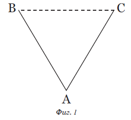
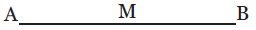

Беседа 1298 от 3877 · Беинса Дуно
Развиване на дарбите / Методи на природата за събуждане на дарбите
— Само светлият път на мъдростта води към истината.
— В истината е скрит животът.

Какво представят в съвременното общество точките А, В и С? Точките В и С са длъжници, които внасят дълговете си в касата на кредитора А. Един ден длъжниците В и С решават да се съюзят и престават да внасят капиталите си в точка А. По този начин наклонените плоскости изчезват и се образува правата ВС. Те образуват едно кооперативно сдружение. Хората се кооперират, когато искат да улеснят живота си, да минават без мъчнотии и страдания. Такъв живот е лек, лесно се управлява. Ще кажете, че се стремите към лек живот, като този на капелмайстора, който, само с махане на ръка, управлява цял оркестър. Когато капелмайсторът излезе на сцената, работата му е лека, но той е употребил десетки години усилия, работа и труд, изразходвал е много енергия, докато дойде до резултата на своята дейност, да маха с ръка или с пръчица, да управлява всички музиканти. Във всяка машина има два капелмайстора: единият тегли напред, другият бута отзад, и колата върви.
Кога движението е праволинейно? – Когато не среща на пътя си никакво съпротивление, никаква мъчнотия. Можете ли да имате живот без мъчнотии? – Не може. Каквото и да правите, вие не можете да избегнете от мъчнотиите, но можете да ги превърнете. Техниката преодолява много трудности при превръщане на мъчнотиите. Както горивото изгаря, за да се използва енергията му в топлина, така и при превръщане на мъчнотиите, енергията им трябва да се увеличава. Енергията на мъчнотиите трябва да се превърне от потенциална в кинетическа. Този процес в науката е известен под името „горене“. При горенето става разредяване. Каквото представя горенето на физическия свят, такова нещо са мъчнотиите в духовния свят. При мъчението се развива топлина, която сгрява. Ако не знае законите, чрез които да се справя с мъчнотиите си, човек може или да изгори, или да се удави – зависи докъде е стигнал. Попадне ли по наклонената плоскост, по която се стича водата, той може да се удави; натъкне ли се на енергията, която се развива при движението на водата, той може да изгори. За да не се удави, нито да изгори, трябва да дойде никой разумен човек, да впрегне енергията на водата или за каране на воденица, или за осветление.
Може ли човек да живее без мъчнотии? – Не може. При сегашните условия на живота би било страшно да живее човек без мъчнотии. – Защо? – Защото щеше да бъде грозен. Красив човек е онзи, който е минал през големи мъчнотии. Красивите хора са толкова опасни, колкото красивите и високи планински върхове. Който тръгва на път към високите върхове, трябва да носи въже, тояга, за да се справя с мъчнотиите, които среща на пътя си. Ето защо, когато срещнете красив човек, ще се въоръжите, като турист, с въже и тояга, да не пострадате. Красивите и високи върхове са студени, там човек може да измръзне. Такива са и красивите хора. Красив е Монт-Еверест, но, който не знае условията, които съществуват там, ще стигне до известно място и няма да се върне назад.
Сегашните хора живеят в един културен и красив свят, но, въпреки това, срещат големи мъчнотии. Защо са мъчнотиите? Могат ли да се премахнат? – Могат. Достатъчно е да знае човек, как да впрегне енергията им, да създаде нещо ценно и полезно от нея, за да се освободи от тях. За да се постигне това, знание е нужно на човека. Какво може да придобие човек на една равнина, като Тибетската, която се намира на височина четири-пет хиляди метра над морското равнище? Там жито, царевица не виреят. Тамошните жители са повече овчари, отглеждат стада. Можете ли при тези условия да бъдете вегетарианци? Друг е въпросът, ако се прекарат шосета, железници, да свържат високите места с низините, да пренасят благата на низините горе, а благата на висините – в долините. Тибетските високи места са добри, но за разумни, културни същества, а долините – за обикновените хора. Най-устойчивото място засега е точка А – фиг. 1. Тук човек може да складира капитала си и да очаква големи приходи.
Помнете: Колкото по-големи мъчнотии има човек, толкова по-добри са условията за неговото развитие. Кои работи са мъчни? – Неразбраните. Всички разбрани работи са лесни. Например, когато хората са просветени духовно, по-лесна работа от музика, художество и поезия не съществува. Цигуларят взима цигулката и лъка си и свири; художникът взима четката и боите и рисува; поетът взима перо и хартия и пише. Попаднат ли в среда, която не ги разбира, те срещат големи мъчнотии и препятствия. Хората разбират цигуларя, когато се веселят; те разбират изкуството и художеството, когато дойдат светли моменти в живота им и трябва да се облекат добре; те разбират поезията, когато искат да предадат своите чувства.
Има специфични моменти в човешкия живот, когато човек може да прояви своята дейност и развие своите дарби. Всеки трябва да се запита, кога се проявяват тези специфични моменти и по какво се отличават. Който губи тези моменти, той всякога прави погрешки. Всяко нещо е ценно, когато се направи на време, в неговия специфичен момент. Кой човек греши? – Който има капитал. Същевременно, той става причина, и другите хора да грешат. Понеже е богат, мнозина се домогват до него, с намерение да го оберат. Никой не може да обере сиромаха, но богатия – всички. Кражбата не е естествен процес, но, въпреки това, става. Казано е в Писанието, че крадецът не иде, освен да погуби, заколи и да открадне. Значи, той нарушава естествените закони на Битието. Той взима, без да е дал нещо от себе.

Като разглеждаме ъгъла ВАС, фиг. 1, виждаме, че той има граници, т. е. върхът А може да стигне най-много до центъра на земята. С други думи казано: всяка мъчнотия може да стигне най-много до центъра на земята – по-долу не може да отиде. Колкото по-долу слиза една мъчнотия, толкова по-големи възможности носи в себе си за развиване на дарбите и добродетелите. Като знаете това, радвайте се, че имате мъчнотии, изпитания, изкушения, страдания, падания. Чрез тях вие обработвате и развивате дарбите си. Не съжалявайте, че сте паднали, но използвайте падането си за своето повдигане и възлизане нагоре. Така се е създала културата. Адам и Ева паднаха, но създадоха условия за повдигане на човечеството. Който мисли право, той вижда доброто, което се крие в мъчнотиите и изпитанията. Ученикът на Божествената школа трябва да знае, че на всички отрицателни сили в природата отговарят положителни сили, т. е. добродетели и дарби. Това е закон, който трябва да знаете. Човек се учи не само от положителното, но и от отрицателното. Важно е, да използва човек разумно всички условия, при които живее. И непослушанието, което е спънало първите човеци, дава добри уроци.
Един професор по химия дал на един от своите любознателни студенти да носи шише с амоняк, силно концентриран, като го предупредил да внимава да не го отваря. Студентът не послушал професора си: отворил шишето и го помирисал толкова дълбоко, че миризмата на амоняка проникнала в дробовете му. Той се задушил от силната миризма и паднал на земята. След това, колкото пъти виждал професора си да носи шише с амоняк, той се отдръпвал назад – научил урока си. Какво представя шишето с амоняка? – Това е злото, което събаря човека на земята, с цел да го обере. Пазете се от крадци и разбойници, които обират. Ако не можете да ги избегнете, поне ще научите един урок, да бъдете внимателни и послушни.
Работа се иска от ученика. Каквато задача му се даде – мъчнотия, изпитание, изкушение – да я реши правилно. Природата го удостоила с внимание, за което той трябва да благодари.
Когато професорите ви дават задачи, те имат предвид събуждането на съзнанието ви. Колкото по-мъчни задачи ви дават, толкова по-голяма вяра имат във вас. Те виждат, че сте талантливи, че от вас може да излязат добри ученици и съдействат за пробуждане на съзнанието ви, както и за развиване на вашите дарби. Природата е обширно, велико училище, в което работят способни професори. Те имат предвид повдигането на всички души и работят усърдно за тяхното развитие. Не казвайте, че сте остарели, че не можете да работите. Това е криво разбиране, т. е. разбиране на личността. Гледайте на нещата с очите на Великото. Считайте, че възможностите на Цялото са и ваши възможности. Постиженията на едного са постижения на всички. Радвайте се на успехите на своя ближен, за да се радва и той на вашите успехи.
Да се върнем пак към въпроса за мъчнотиите. Ще знаете, че колкото по-големи мъчнотии има човек, толкова по-големи са и придобивките му. И обратно: колкото по-малки са мъчнотиите, толкова по-малки са придобивките. Като се вглеждате в ъгъла ВАС на фиг. 1, точките В и С представят очите; точката А, дето достига мъчнотията, е устата, а правата ВС – разстоянието между двете очи. Колкото по-голямо е това разстояние, толкова повече впечатления получава човек. Ако разстоянието е малко, човек получава малко впечатления. Ако впечатленията са много, мъчно се обработват. Щом са малко, лесно се обработват.
Когато говорим за мъчнотиите, ние имаме предвид тези, които природата дава на човека, а не ненужните, които той сам си създава. Как се разрешават правилно мъчнотиите? – Според Христовия закон, който гласи: „Ако те ударят от едната страна, дай и другата.“ Този закон има смисъл само тогава, когато те удари мъдър, разумен, любещ човек. Енергията, предадена чрез неговата ръка, носи благословение за човека. Следователно, радвайте се, когато разумната природа ви наказва и изпраща мъчнотии. Казано е в Писанието, че праведният ще влезе в Царството Божие с големи мъчнотии и страдания. В този смисъл, мъчнотиите представят път към пробуждане на Божественото съзнание в човека. Колкото по-големи мъчнотии има, толкова по-големи са възможностите му за превръщане на потенциалната енергия в кинетическа. Не бягайте от мъчнотиите, но използвайте разумно енергията, която се развива във вас и кажете си: Ще работя върху себе си, ще вървя в съгласие с природата, за да стана истински човек.
— Само светлият път на мъдростта води към истината.
— В истината е скрит животът.
9. Лекция от Учителя, държана на 19 октомври, 1928 г. София – Изгрев.